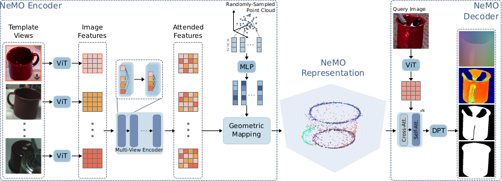

We present Neural Memory Object (NeMO), a novel object-centric representation that can be used to detect, segment and estimate the 6DoF pose of objects unseen during training using RGB images. Our method consists of an encoder that requires only a few RGB template views depicting an object to generate a sparse object-like point cloud using a learned UDF containing semantic and geometric information. Next, a decoder takes the object encoding together with a query image to generate a variety of dense predictions. Through extensive experiments, we show that our method can be used for few-shot object perception without requiring any camera-specific parameters or retraining on target data. Our proposed concept of outsourcing object information in a NeMO and using a single network for multiple perception tasks enhances interaction with novel objects, improving scalability and efficiency by enabling quick object onboarding without retraining or extensive pre-processing. We report competitive and state-of-the-art results on various datasets and perception tasks of the BOP benchmark, demonstrating the versatility of our approach. Code and synthetic dataset will be released.
Our novel encoder combines the information stored in a set of images into a unified, geometrically understandable representation. The encoder learns to predict the objects geometry as a 3D point cloud and associates semantic features with each point. We jointly learn a decoder that can use the NeMO encoding to predict an object centric pointmap in the coordinate system of the NeMO encoding, a modal and an amodal semantic mask.
Using the pointmap predictions of the NeMO Decoder, we can estimate object-centric surfaces and camera poses using only a few images. Our method is able to robustly estimate camera poses and object surfaces in various settings - A static object and a moving camera, a static camera and an object rotated in hand and both moving cameras and the object being in different scenarios, including occlusion. We also show the estimated positions of the cameras relative to the object (not to scale):
The decoder learns to predict modal and amodal object segmentation. We can predict amodal segmentation masks of new objects that have never been seen during training.